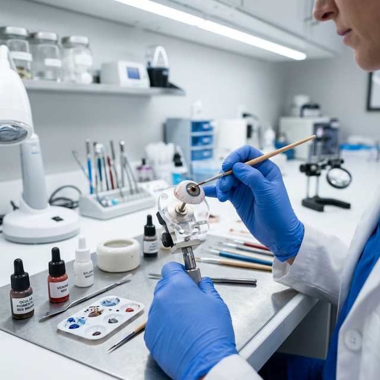
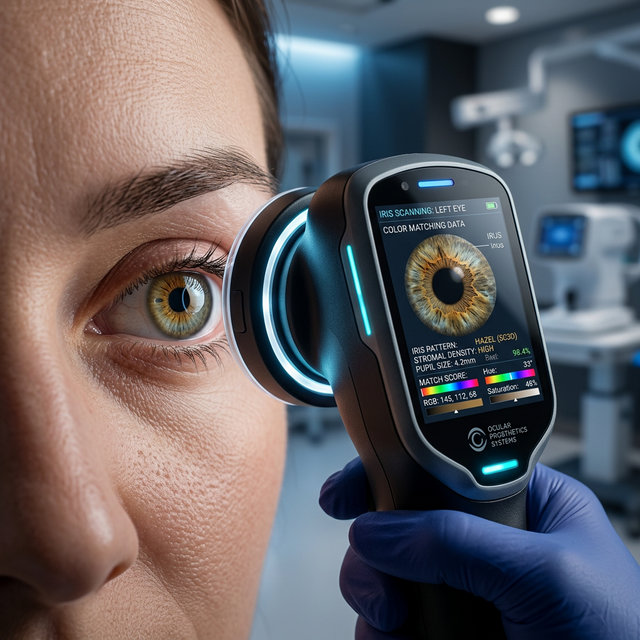
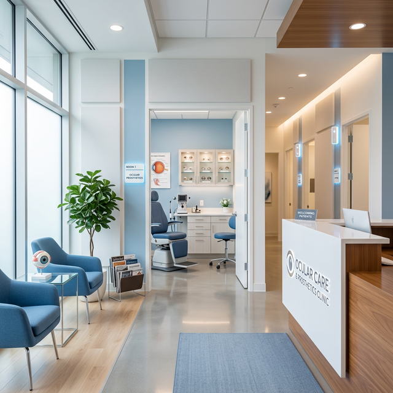

Chennai’s premier center for bespoke ocular prosthetics. We combine world-class clinical artistry with advanced digital matching to restore your confidence and natural appearance.

Certified Ocularist
Hand-Painted Detail
We use high-quality Polymethyl Methacrylate (P.M.M.A), ensuring unbreakable, durable, and biocompatible restorations that are non-reactive to body tissue.
Proprietary Digital Iris technology to capture natural patterns and achieve perfect color depth for the patient with one eye.
"To provide quality services and highest standard of workmanship for every patient with one eye."

We don't just create a prosthesis; we meticulously recreate a part of you. By integrating high-definition digital scanning with traditional hand-painted techniques, we achieve a depth of color and anatomical accuracy that is indistinguishable from your natural eye.
Precision-engineered restorations tailored to each patient's unique anatomical requirements.
Bespoke artificial eyes featuring hand-painted iris mapping. Prevents socket shrinkage, eliminates watering/discharge, and maximizes motility.
Consult SpecialistSpecialized ocular prosthesis designed to support drooping eyelids and restore natural symmetry.
View CatalogUltra-thin aesthetic covers for phthisical or sensitive remaining eyes, tailored for zero irritation.
Learn MoreIntermediate restorations including socket expanders and motility pegs for post-surgical socket health.
Get AssessmentMaintain the longevity and comfort of your prosthesis with our medically-recommended care protocol.
Always sanitize hands thoroughly before handling the prosthesis to prevent infection.
Clean with 0% irritant mild solutions monthly to remove surface protein deposits.
Schedule a professional resurfacing and polishing every 6 to 12 months for optimal hygiene.

Speak with our lead ocularist today for a confidential assessment and personalized care plan.